CROVÉ
A complete visual identity for a bakery and coffee brand — built to work on everything from a cup sleeve to a delivery truck to an Instagram grid, on one consistent cobalt-blue system.
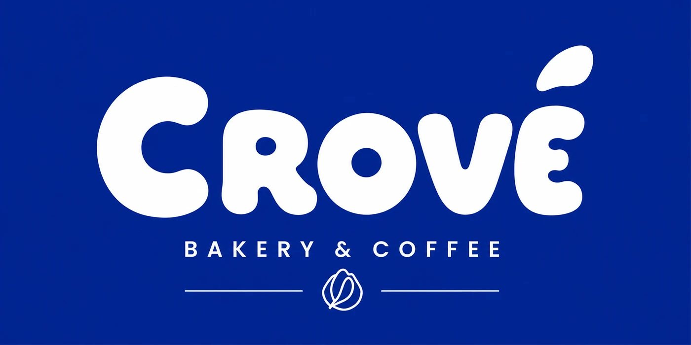
The brief
CROVÉ needed an identity that could carry a bakery-and-coffee brand across a genuinely wide range of touchpoints — not just a logo and a menu board, but a storefront people recognise from across the street, a delivery truck that reads at speed, staff uniforms, packaging that survives a delivery bag, and a social feed that looks like one brand posted it, every time. A lot of identity work stops at the logo and a mockup or two; this one needed to actually hold up applied to real surfaces: fabric, vinyl, cardboard, glass.
Approach
I built the system around two decisions made early and then never broken: a single confident cobalt blue as the dominant colour (rather than a secondary palette competing for attention), and a consistent leaf-shaped bean icon that could scale from a tiny cup-sleeve mark down to an interior wall motif without losing legibility. Everything else — typography, the wordmark's rounded letterforms, the pattern used on the custom wrapping paper — was designed to support those two anchors rather than introduce new variables application by application.
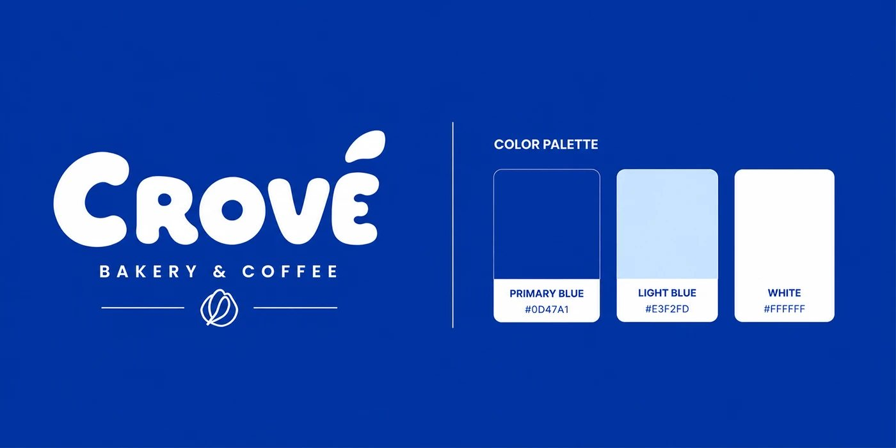
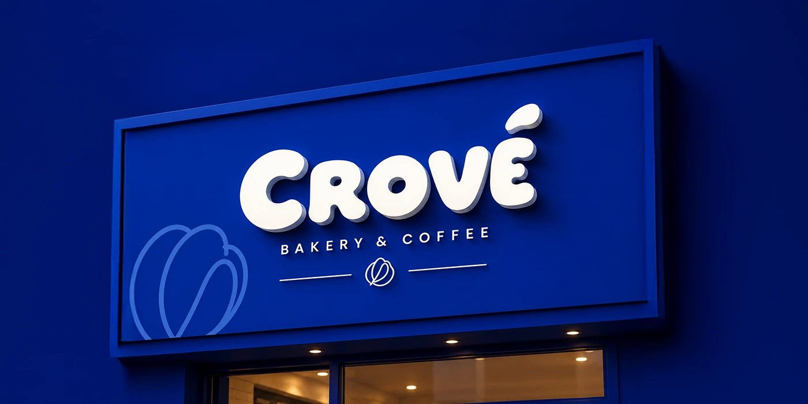
What I built
A full identity system covering brand, environmental, packaging, apparel and social applications — not a logo with a few mockups attached.
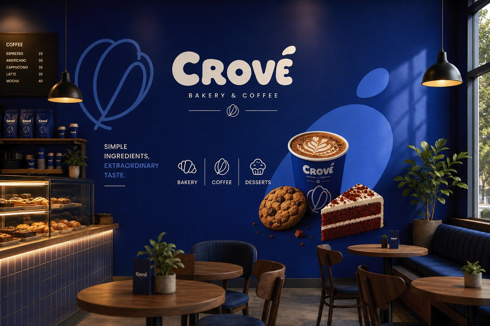
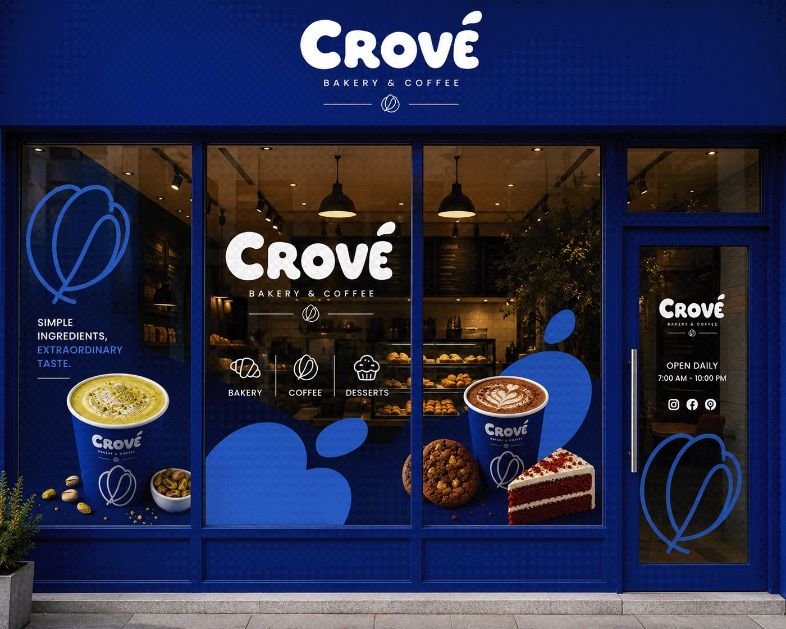
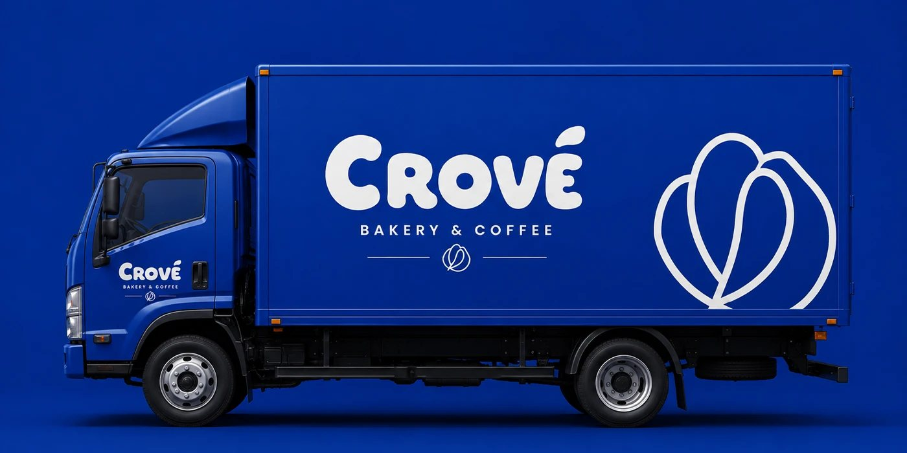
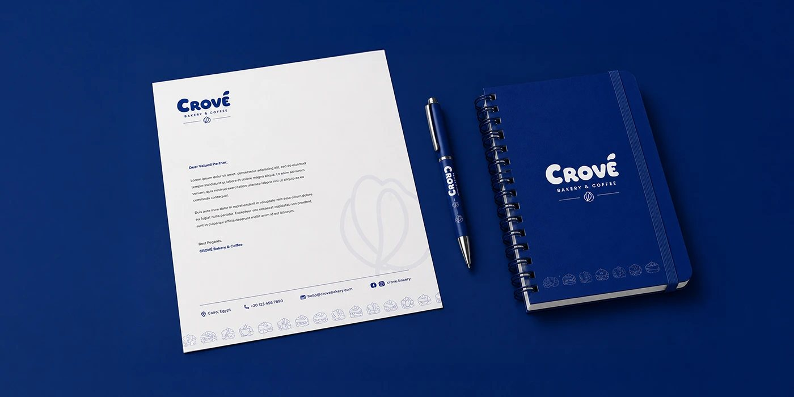
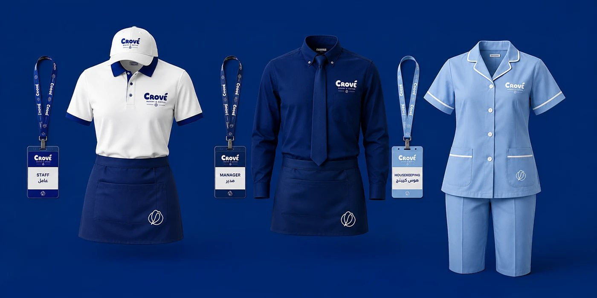
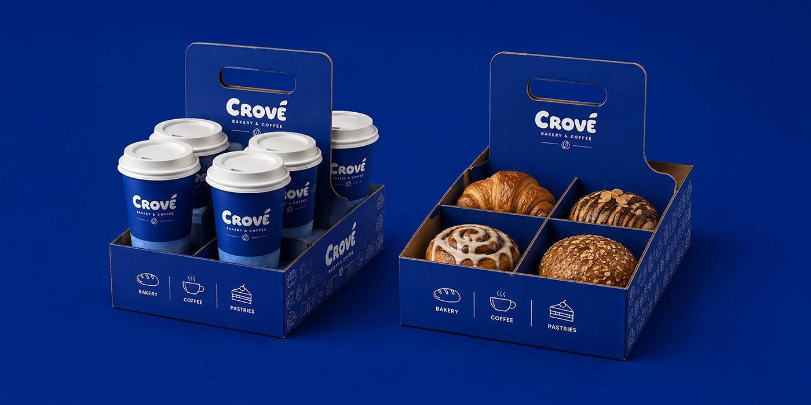
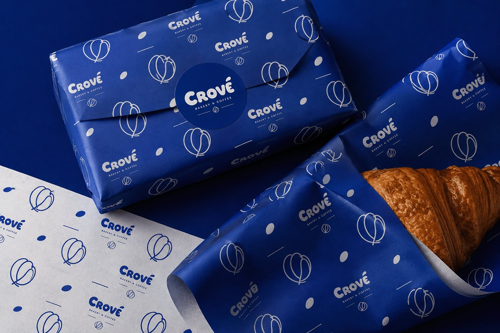
Social & product content
The identity extends into a square-format social content system — each post keeps the same structural grid (logo top, product centre, tagline base) so the feed reads as one brand regardless of which product is featured that day.
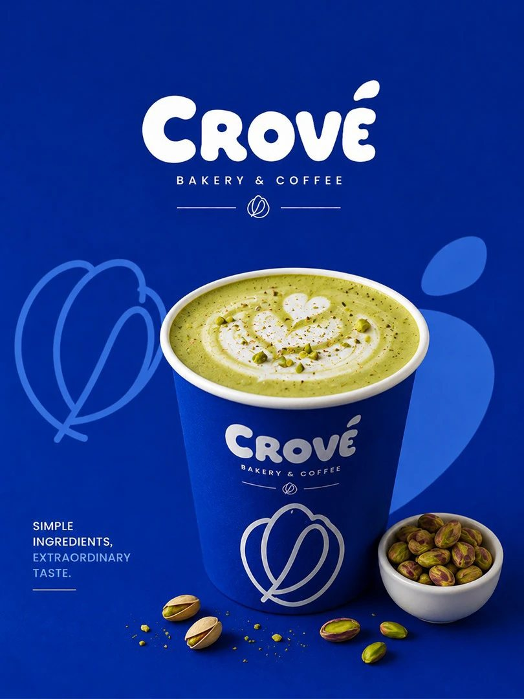
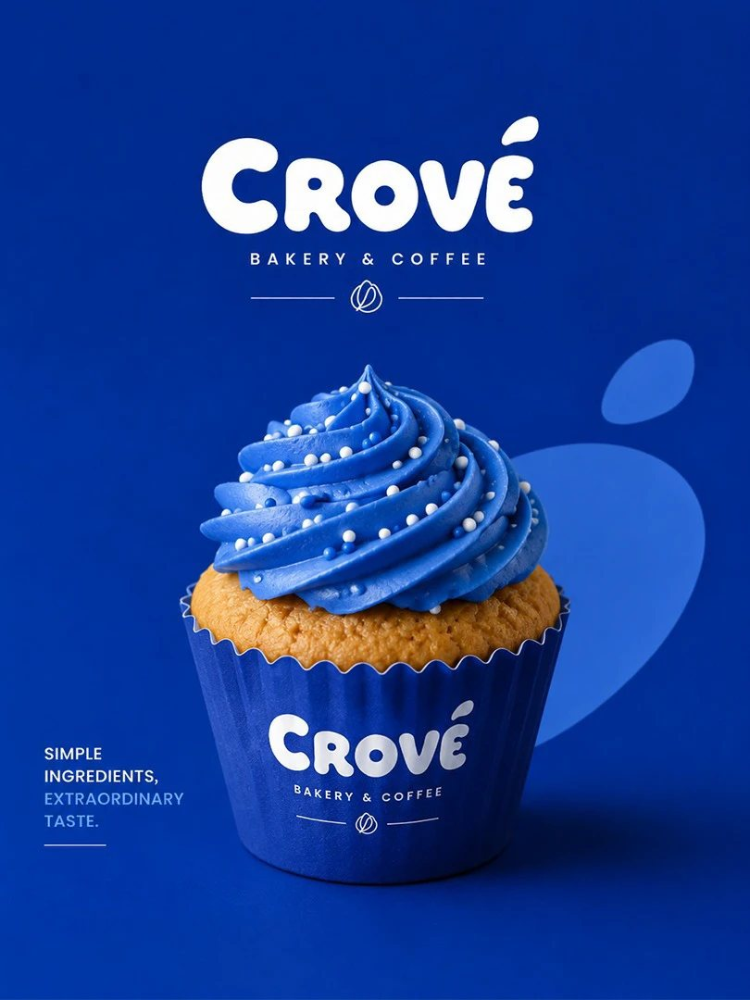
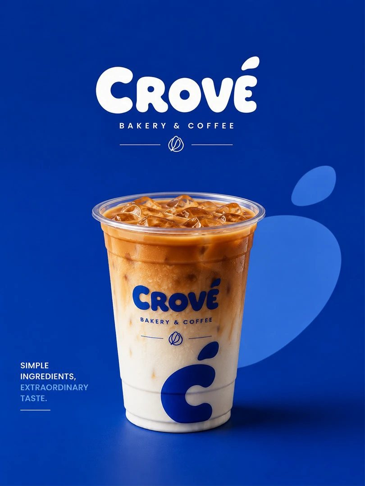
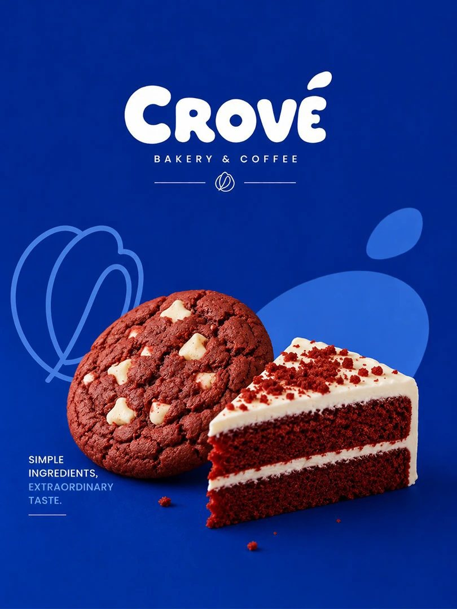
Outcome
A complete, applied brand identity — not a logo deck. The system was built and tested across the full range of surfaces a bakery-and-coffee brand actually needs: signage, interior, vehicle wrap, stationery, uniforms, packaging and a 14-piece social content set, all carrying the same two anchors (the cobalt blue, the leaf/bean mark) without drift.
The discipline this project is really testing isn't the logo itself — it's whether the same two or three decisions still look intentional on their 29th application. That consistency, more than any single asset, is the actual deliverable.